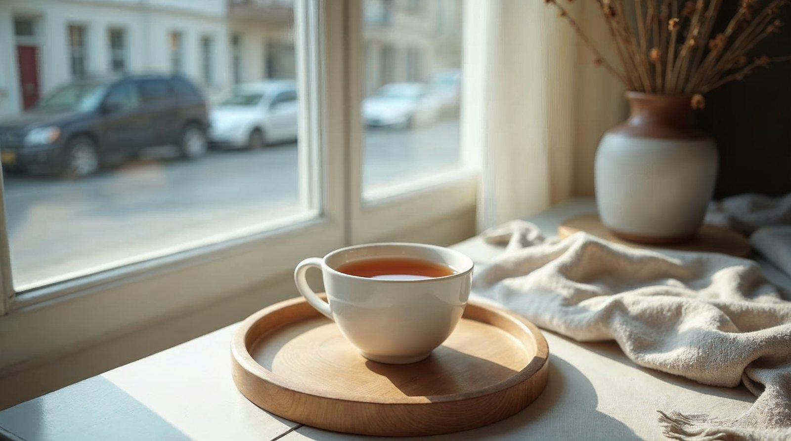
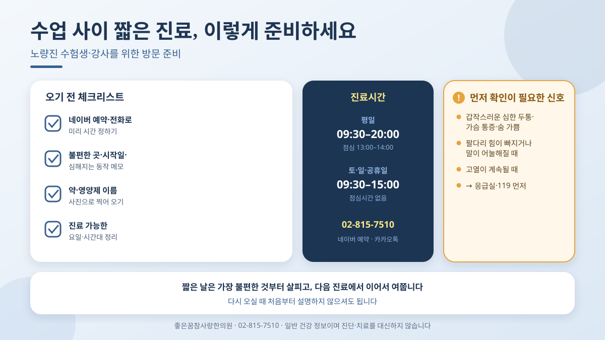

이종호 한의사 감수좋은꿈참사랑한의원 대표원장 (한의사 면허번호 19769)발행 2026-11-24 · 수정 2026-11-26
이 글의 차례
- 왜 미리 준비해 오면 좋을까요
- 왜 수험생은 진료를 미루게 될까요?
- 어떤 불편으로 많이 오시나요?
- 상황별 예시
- 진료 전 며칠, 공부 자리에서 관찰해 둘 것
- 참고 미루면 어떤 일이 생기기 쉬울까요?
- 먼저 이렇게 여쭙니다
- 일상에서 먼저 해 볼 수 있는 것
- 예약할 때 이렇게 말씀해 주세요
- 메모는 이렇게 적어 오세요
- 오시는 길과 이동 시간은 어떻게 잡나요?
- 다음 진료 간격은 어떻게 정하나요?
- 강사분이라면 이런 점을 함께 알려 주세요
- 시간이 빠듯한 날은 이렇게 해요
- 진료를 마치고 공부로 돌아갈 때는
- 한의원에서 함께 살필 수 있는 경우
- 이렇게 기록해 오시면 상담이 쉬워집니다
- 이런 증상은 먼저 확인이 필요합니다
- 관련 글
미리 예약하고 불편한 점을 메모해 오시면 수업 사이 짧은 시간에도 진료를 받기가 한결 수월합니다. 노량진 수험생과 강사는 하루 일정이 빡빡해, 몸이 불편해도 수업 빠지기가 어려워 미루다 오래 참는 분이 많습니다.
시험이 끝나면 가야지 하며 몇 달을 버티다 오시는 분도 많습니다. 그 마음을 잘 알기에, 바쁜 하루 안에서 진료 시간을 짧고 알차게 쓰는 방법을 정리해 드리려 합니다. 준비를 조금만 해 오셔도 같은 시간에 더 많은 이야기를 나눌 수 있습니다.
왜 미리 준비해 오면 좋을까요
- 짧은 진료 시간에는 불편한 곳이 여러 군데여도 가장 불편한 것부터 살피게 되어, 우선순위를 정해 오시면 도움이 됩니다.
- 증상이 시작된 날과 심해지는 동작을 기억에만 의존하면 진료실에서 떠올리기 어렵습니다.
- 복용 중인 약과 영양제를 정확히 알아야 치료나 한약이 겹치지 않는지 확인할 수 있습니다.
- 수험 생활에서는 목·허리, 소화, 잠의 불편이 함께 오는 경우가 많아 한 번에 정리해 두면 상담이 수월합니다.
- 진료실에 들어오면 긴장해서 하려던 말을 잊는 분이 많아, 메모가 있으면 빠뜨리는 것이 줄어듭니다.
왜 수험생은 진료를 미루게 될까요?
수업과 자습 시간표가 빽빽하면 병원에 다녀오는 한두 시간이 크게 느껴집니다. 게다가 목이나 허리가 뻐근한 정도는 다들 이 정도는 참고 한다는 생각에 넘기기 쉽습니다.
그런데 뻐근함을 참으며 같은 자세로 공부를 이어 가면 앉아 있는 시간 자체가 고통스러워지고, 잠과 집중까지 흔들리기도 합니다. 불편이 작을 때 한 번 살펴보는 것이 오히려 공부 시간을 지키는 길이 될 수 있습니다.
어떤 불편으로 많이 오시나요?
노량진에서 공부하거나 강의하는 분들이 수업 사이에 들러 상담하는 불편은 흔히 몇 갈래로 나뉩니다. 내 불편이 어디에 가까운지 미리 생각해 오시면 이야기가 빨라집니다.
- 오래 앉아 있어 생기는 목, 어깨, 날개뼈 사이, 허리, 꼬리뼈의 뻐근함
- 필기와 판서로 생기는 손목, 엄지, 팔꿈치의 불편
- 불규칙한 식사로 생기는 더부룩함, 속쓰림, 변비
- 시험 긴장으로 생기는 얕은 잠, 두근거림, 두통
- 강의로 목을 많이 쓰는 분들의 목 잠김과 피로
어느 쪽인지 잘 모르겠다면 "어디가, 언제부터, 어떨 때" 세 가지만 떠올려 오셔도 충분합니다.
상황별 예시
- 예를 들어 오전 수업이 12시에 끝나고 오후 수업이 2시에 시작하는 수험생이라면, 평일 13:00~14:00은 한의원 점심시간이라 실제로 쓸 수 있는 시간은 더 짧습니다. 예약할 때 몇 시까지 돌아가야 하는지 말씀해 주시면 그 안에서 할 수 있는 만큼 살펴봅니다.
- 예를 들어 저녁 강의를 마치고 오시는 강사라면, 평일 진료가 20:00에 끝나는 것을 고려해 일정을 잡아 두는 것이 좋습니다. 강의가 늦게 끝나는 요일이라면 주말 진료 시간을 함께 생각해 볼 수 있습니다.
- 예를 들어 주말에만 시간이 나는 수험생이라면, 토·일·공휴일 진료 시간이 평일보다 짧다는 점을 생각해 오전에 예약해 두는 것이 좋습니다. 주말 하루를 진료와 장보기, 빨래처럼 생활을 정리하는 날로 묶어 두면 평일 공부 흐름을 덜 흔들 수 있습니다.
진료 전 며칠, 공부 자리에서 관찰해 둘 것
진료실에서는 평소 공부하는 모습을 직접 볼 수 없습니다. 그래서 오시기 전 며칠 동안 공부 자리에서 몇 가지만 관찰해 오시면 원인을 함께 찾는 데 도움이 됩니다.
- 책상과 의자 높이, 독서대나 모니터 받침을 쓰는지
- 한 번 앉으면 몇 분쯤 지나 자세가 무너지는지
- 불편이 시작되는 시각이 매일 비슷한지
- 쉬는 시간에 일어나 움직이는지, 그대로 앉아 휴대폰을 보는지
- 공부 자리 사진을 한 장 찍어 오기
자리 사진 한 장이면 말로 설명하기 어려운 책상 높이나 의자 모양을 함께 보며 이야기할 수 있습니다.
참고 미루면 어떤 일이 생기기 쉬울까요?
처음에는 오후에만 뻐근하던 목이 몇 주 지나면 아침부터 굳어 있고, 고개를 돌릴 때마다 신경이 쓰이는 식으로 범위가 넓어지기도 합니다. 아픈 곳을 피하려 다른 자세를 쓰다 보면 반대쪽 어깨나 허리까지 뻐근해지기도 합니다.
또 불편이 오래가면 잠이 얕아지고, 얕은 잠은 다시 낮의 집중과 소화에 영향을 줄 수 있습니다. 그래서 저는 작게 불편할 때 물어보시라고 말씀드립니다. 크게 키워서 오시면 본인이 가장 힘들기 때문입니다.
오신다고 해서 늘 치료를 받아야 하는 것도 아닙니다. 맥을 보고 지금 치료가 필요한지, 생활을 바꾸며 지켜봐도 되는지를 구분해 말씀드립니다.

먼저 이렇게 여쭙니다
- 가장 불편한 곳과 불편해진 시기는 언제인가요?
- 진료 받을 수 있는 시간대는 언제인가요?
- 복용 중인 약이나 영양제가 있나요?
- 예전에 받은 검사 결과가 있나요?
- 하루에 앉아 있는 시간과 쉬는 간격은 어떤가요?
- 잠은 몇 시에 들고 몇 시에 일어나나요?
통증으로 오셨는데 잠과 앉는 시간을 여쭙는 것이 의아하실 수 있습니다. 수험 생활에서는 목·허리의 불편과 잠, 소화가 서로 얽혀 있는 경우가 많아, 하루 흐름을 함께 들어야 무엇부터 손볼지 정할 수 있습니다.
제가 진료실에서 늘 함께 보는 다섯 가지가 있습니다. 잘 먹고, 잘 싸고, 잘 자고, 마음 편하고, 몸 따뜻하게. 몸이 회복하는 바탕이라고 보기 때문에, 목이 아파 오신 분께도 끼니와 대변, 잠을 함께 여쭙습니다.
일상에서 먼저 해 볼 수 있는 것
- 네이버 예약이나 전화(02-815-7510)로 미리 시간 정하기
- 불편한 곳, 시작된 날, 심해지는 동작을 휴대폰에 메모하기
- 먹는 약과 영양제 이름을 사진으로 찍어 오기
- 평일 저녁이나 주말 시간도 함께 고려하기
- 궁금한 점이 있으면 카카오톡 상담으로 미리 여쭤 보기
- 진찰 때 움직임을 볼 수 있도록 편한 옷차림으로 오기
- 무거운 가방은 학원 사물함에 두고 가볍게 오기
예약할 때 이렇게 말씀해 주세요
네이버 예약이나 전화로 시간을 정하실 때 몇 가지를 함께 알려 주시면 그날 진료 준비가 수월합니다.
- 처음 오시는지, 다시 오시는지
- 가장 불편한 곳 한 가지
- 진료 뒤 돌아가야 하는 시각
- 원하는 원장님이 있다면 그 일정(원장별 일정은 전화로 확인해 주세요)
예약 시간에 늦을 것 같거나 수업이 늘어나 못 오시게 되면 미리 전화나 카카오톡으로 알려 주세요. 추나요법의 건강보험 적용 여부와 비용도 방문 전 전화(02-815-7510)로 확인해 주세요.
메모는 이렇게 적어 오세요
짧은 진료 시간을 가장 잘 쓰는 방법은 휴대폰 메모 한 장입니다. 길게 쓸 필요 없이 아래 순서대로 한두 줄씩이면 충분합니다.
- 어디가: 예) 오른쪽 날개뼈 안쪽, 왼쪽 손목 엄지 쪽
- 언제부터: 예) 3주 전, 모의고사 기간부터
- 어떨 때 심한가: 예) 오후 서너 시, 오래 앉아 있다 일어날 때
- 어떨 때 편한가: 예) 누워 있을 때, 따뜻하게 했을 때
- 함께 있는 불편: 예) 두통, 잠을 자주 깸, 속이 더부룩함
- 먹고 있는 약: 약 봉투나 영양제 통을 사진으로
이 메모를 진료실에서 그대로 보여 주시면 처음부터 다시 설명하는 시간이 줄어듭니다. 다 채우지 못해도 괜찮습니다. 모르는 칸은 진료실에서 함께 채우면 됩니다.
오시는 길과 이동 시간은 어떻게 잡나요?
좋은꿈참사랑한의원은 서울 동작구 만양로2길 2 신성빌딩 3층·5층에 있습니다. 노량진역(1·9호선) 3번 출구 쪽에서 마을버스 동작01번을 타고 신동아리버파크 정류장에서 내리면 건너편 건물입니다.
수업 사이에 오신다면 학원에서 정류장까지 걷는 시간, 마을버스를 기다리는 시간, 진료 시간, 돌아가는 시간을 모두 더해 여유 있게 잡아 주세요. 처음 오시는 날은 길을 찾는 시간에 진찰 시간까지 더해져 다시 오실 때보다 오래 걸릴 수 있어, 수업이 없는 시간대나 주말을 고르시면 마음이 편합니다.
다음 진료 간격은 어떻게 정하나요?
다시 오시는 간격은 불편의 정도와 치료 내용, 그리고 수업 일정에 따라 함께 정합니다. 같은 불편이라도 사람마다 반응이 달라, 첫 진료 뒤 하루 이틀 몸의 변화를 보고 다음 일정을 조정하는 경우가 많습니다.
수업 시간표가 매주 같다면 진료 요일과 시간을 고정해 두면 챙기기 쉽습니다. 모의고사나 시험이 있는 주는 미리 말씀해 주시면 그 일정에 맞춰 함께 정합니다.
수업 시간표에 맞추다 보면 다른 원장에게 진료받는 날도 생깁니다. 그런 날에도 이전 기록을 보고 이어서 진료하고, 일정 기간마다 대표원장이 다시 맥을 확인합니다.
강사분이라면 이런 점을 함께 알려 주세요
노량진에서 강의하시는 분들은 수험생과 불편의 모습이 조금 다릅니다. 오래 서서 판서하고 목소리를 많이 쓰기 때문에, 진료 때 아래 내용을 함께 알려 주시면 살피기가 수월합니다.
- 하루 강의 시간과 서 있는 시간, 판서를 주로 하는 손
- 마이크를 쓰는지, 강의실 크기와 냉난방 상태
- 강의가 몰리는 요일과 비교적 여유 있는 요일
- 목소리가 잠기거나 어깨·허리가 뻐근해지는 시점
시간이 빠듯한 날은 이렇게 해요
수업 시간이 다가와 마음이 급한 날에는 진료실에 들어오실 때 돌아가야 하는 시각을 먼저 말씀해 주세요. 그 시간 안에서 가장 필요한 것부터 순서를 정합니다.
침을 맞고 바로 수업에 들어가야 하는 날이라면 자리를 적게 쓰고, 누워 쉬는 시간을 짧게 조절하기도 합니다. 집에서 해 볼 자세나 스트레칭도 그날은 한두 가지로 줄여 말씀드립니다.
정류장에서 뛰어오신 날에는 잠시 숨을 고르신 뒤 맥을 짚습니다. 걸어오신 직후에는 맥이 달라지기 때문입니다. 돌아갈 시각을 알고 있으면 그 안에서 시간을 나눠 쓰니, 시계를 자꾸 보며 마음 졸이지 않으셔도 됩니다.
진료를 마치고 공부로 돌아갈 때는
치료를 받은 직후에는 몸이 나른하거나 치료한 부위가 묵직하게 느껴지는 분도 있습니다. 바로 일어나 서두르기보다 잠시 앉아 몸을 살피고, 학원으로 돌아가는 길은 천천히 걸어가 보세요.
침을 맞은 날은 과음과 무리한 운동을 피해 주세요. 진료실에서 안내받은 자세나 스트레칭은 그날 저녁 한 번만이라도 해 보시고, 하다가 불편이 커지면 멈추고 다음 진료 때 말씀해 주세요.
한의원에서 함께 살필 수 있는 경우
- 처음 오시면 접수 뒤 맥을 짚으며 상담과 진찰을 하고, 이어서 치료와 귀가 전 안내를 합니다.
- 시간이 짧은 날에는 가장 불편한 것부터 먼저 살피고 다음 진료에서 이어서 여쭙니다.
- 다시 오실 때는 지난번 이야기부터 이어서 묻기 때문에 처음부터 다시 설명하지 않으셔도 됩니다.
좋은꿈참사랑한의원에서는 짧은 시간에도 모든 분께 맥부터 짚으며 가장 불편한 것을 여쭙고, 필요하다고 판단될 때 설진이나 초음파를 더해 살핀 뒤 그날 할 수 있는 방법을 정합니다. 귀가 전에는 다음 진료까지 지켜볼 점을 알려 드립니다.
가장 불편한 곳은 원장이 직접 침이나 추나, 체외충격파 가운데 그날 필요한 치료를 하고, 그 밖의 불편한 곳은 직원이 온열·자기장 같은 물리치료로 이어서 살핍니다. 치료 부위와 반응은 기록해 두었다가 다음에 오시면 달라진 점부터 여쭙습니다.
병원에서 치료를 받고 있거나 약을 드시는 중이라면 그대로 이어 가시고, 진료 때 알려 주시면 겹치거나 조심할 부분을 확인합니다. 한약 상담은 지금 드시는 약을 확인한 뒤에 하고, 임신 중이거나 가능성이 있다면 미리 말씀해 주세요.
이렇게 기록해 오시면 상담이 쉬워집니다
- 가장 불편한 곳, 시작된 날, 심해지는 동작이나 시간대
- 복용 중인 약과 영양제 이름(사진도 좋습니다)
- 예전에 받은 검사 결과지나 진단명
- 진료를 받을 수 있는 요일과 시간대
치료를 받고 난 뒤에도 하루 이틀 동안 어떤 점이 달라졌는지 한 줄씩 적어 두시면 좋습니다. "다음 날 아침 덜 뻐근, 오후엔 비슷"처럼 짧게 적어 오시면 다음 진료에서 무엇을 이어 갈지 정하기가 쉬워집니다.
다음에 오시면 지난번 메모에 적어 두신 곳이 그사이 어땠는지부터 여쭙겠습니다. 수업과 수업 사이 짧은 틈이라도 몸을 돌보는 시간으로 써 보시길, 진료실에서 기다리겠습니다.
이런 증상은 먼저 확인이 필요합니다
- 갑자기 심한 두통, 가슴 통증, 숨 가쁨이 생긴 경우
- 팔다리 힘이 갑자기 빠지거나 말이 어눌해진 경우
이런 신호가 있으면 한의원보다 가까운 병원이나 응급실을 먼저 찾으세요.
관련 글

여쭙는 것
- 가장 불편한 곳과 불편해진 시기는 언제인가요?
- 진료 받을 수 있는 시간대는 언제인가요?
- 복용 중인 약이나 영양제가 있나요?
생활에서 해 볼 것
- 네이버 예약이나 전화(02-815-7510)로 미리 시간 정하기
- 불편한 곳, 시작된 날, 심해지는 동작을 휴대폰에 메모하기
- 먹는 약과 영양제 이름을 사진으로 찍어 오기
한의원에서 함께 살필 것
- 처음 오시면 접수 뒤 맥을 짚으며 상담과 진찰을 하고, 이어서 치료와 귀가 전 안내…
- 시간이 짧은 날에는 가장 불편한 것부터 먼저 살피고 다음 진료에서 이어서 여쭙니다.
- 다시 오실 때는 지난번 이야기부터 이어서 묻기 때문에 처음부터 다시 설명하지 않으셔…
먼저 확인이 필요한 신호
- 갑자기 심한 두통, 가슴 통증, 숨 가쁨이 생긴 경우
- 팔다리 힘이 갑자기 빠지거나 말이 어눌해진 경우
한눈에 보는 표
| 구분 | 핵심 |
|---|---|
| 여쭙는 것 | 가장 불편한 곳과 불편해진 시기는 언제인가요? 진료 받을 수 있는 시간대는 언제인가요? |
| 생활에서 해 볼 것 | 네이버 예약이나 전화(02-815-7510)로 미리 시간 정하기 불편한 곳, 시작된 날, 심해지는 동작을 휴대폰에 메모하기 |
| 한의원에서 함께 살필 것 | 처음 오시면 접수 뒤 맥을 짚으며 상담과 진찰을 하고, 이어서 치료와 귀가 전 안내를 합니다. 시간이 짧은 날에는 가장 불편한 것부터 먼저 살피고 다음 진료에서 이어서 여쭙니다. |
| 먼저 확인이 필요한 신호 | 갑자기 심한 두통, 가슴 통증, 숨 가쁨이 생긴 경우 팔다리 힘이 갑자기 빠지거나 말이 어눌해진 경우 |
자주 묻는 질문
노량진역에서는 어떻게 가나요?
노량진역(1·9호선) 3번 출구 쪽에서 마을버스 동작01번을 타고 신동아리버파크 정류장에서 내리면 건너편 건물 3층입니다.
진료는 얼마나 걸리나요?
상태와 치료 내용에 따라 다릅니다. 처음 오시는 날은 진찰 시간이 있어 다시 오실 때보다 오래 걸릴 수 있으니, 예약할 때 다음 일정을 말씀해 주시면 함께 맞춰 봅니다.
수업이 끝나고 바로 가면 기다리지 않을까요?
기다리는 시간은 그날 상황에 따라 다릅니다. 수업 일정이 빠듯하다면 방문 전 전화(02-815-7510)로 확인해 주세요.
진료 시간은 어떻게 되나요?
좋은꿈참사랑한의원은 평일 09:30~20:00(점심 13:00~14:00), 토·일·공휴일 09:30~15:00(점심시간 없음)에 진료합니다.
좋은꿈참사랑한의원은 재진 때 지난번 이야기부터 이어서 여쭙니다. 진료시간과 예약은 오시는 길에서 확인하세요.
어디서 상담받을 수 있나요?
좋은꿈참사랑한의원은 서울 동작구 만양로2길 2 신성빌딩 3층·5층(서울 동작구 상도동, 7호선 상도역 3번 출구 근처)에 있습니다. 한의사 3명(이종호 대표원장, 조영기 수석진료원장, 정원영 진료원장)이 진료합니다. 진료시간은 평일 09:30~20:00(점심 13:00~14:00), 토·일·공휴일 09:30~15:00이며, 방문 전 전화로 확인을 권합니다. 예약은 네이버 예약, 카카오톡 상담, 전화 02-815-7510로 받습니다.
이 글은 일반적인 건강 정보이며 개인의 진단이나 치료를 대신하지 않습니다. 증상이 있거나 복용 중인 약이 있다면 진료를 통해 확인하세요. 치료 효과는 개인마다 다를 수 있습니다.
작성 기준: 일반적으로 알려져 있는 건강 정보를 참고해 정리했습니다(대표원장 감수). 증상 기록은 1~2주 동안 하루 1회, 비슷한 시간에 적어 오시면 지난 상태와 비교하기 쉽습니다.